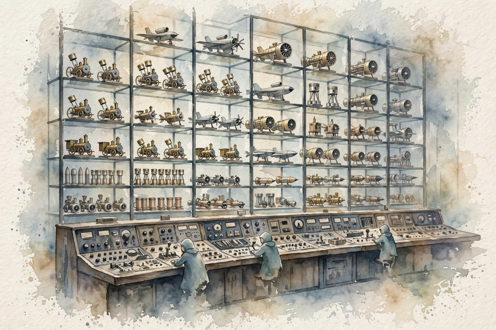
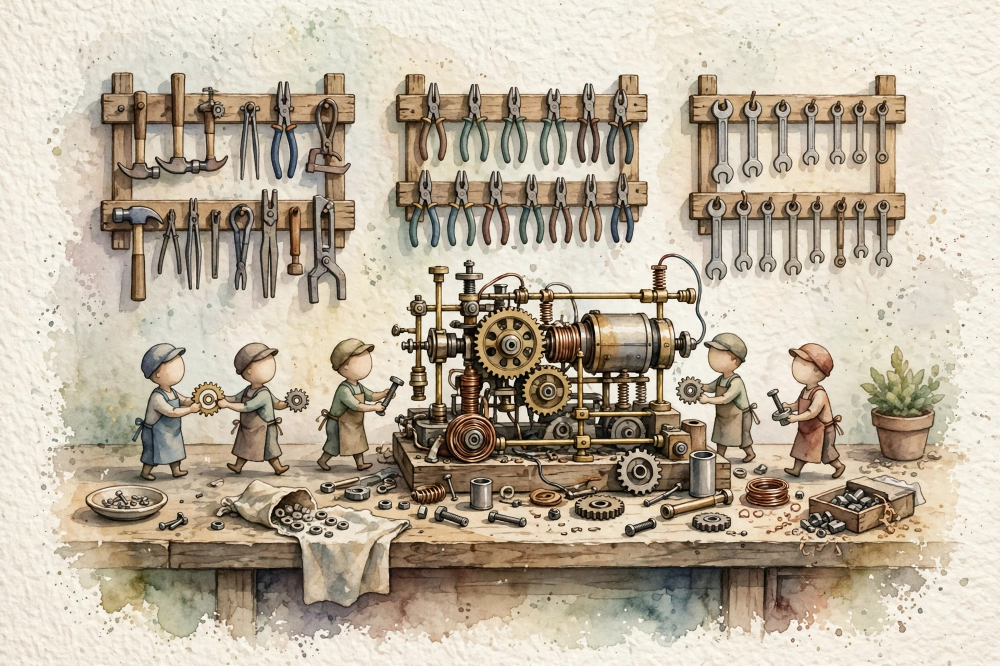
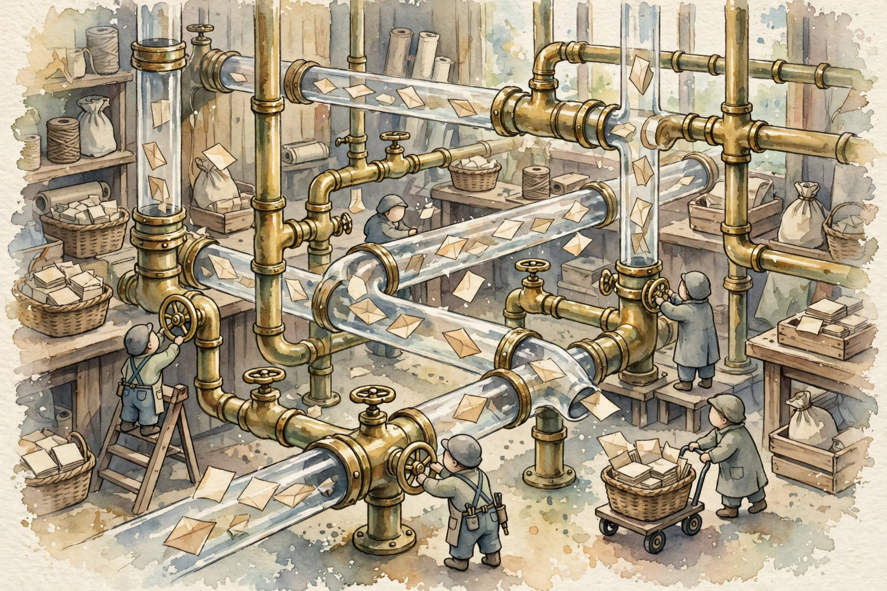

AWS Certified Generative AI Developer — Professional
The build: APIs, agents, and pipes
Domain 1 was design. Domain 2 is the build. This companion walks the full volume in source order: the Converse API, prompt discipline, knowledge bases, agents, Lambda patterns, orchestration, event pipelines, deployment, and the retry rules that keep a product alive at peak.
Read inward. The claim is the outer shell. Under it: the mechanism, the numbers, a worked scenario, and the exam trap.
Outer layer Claim
Start here
Companion · AIP-C01 Domain 2 · Implementation and Integration
An agent is a loop, not a prompt. Tools do the work. The model decides the next call.
Original diagram of the Bedrock Agents orchestration loop: plan, act through an action group, observe, repeat.
The user goal enters the agent with its instructions.
The model picks a tool described by the action group schema.
Lambda, or another target, runs the action and returns data.
The model observes that result and either calls again or answers.
A guardrail can sit on the input and the final output.
Mechanism
Companion · AIP-C01 Domain 2 · Implementation and Integration
Domain 1 was design. Domain 2 is the build. This companion walks the full volume in source order: the Converse API, prompt discipline, knowledge bases, agents, Lambda patterns, orchestration, event pipelines, deployment, and the retry rules that keep a product alive at peak.
Companion to the AIP-C01 Domain 2 volume in the AWS AIP-C01 study guide. No transcript exists. The page narrates the lesson volume and the study plan for the volume.
SOURCE / INTERPRETATION: HOW TO READ THE TAGS
From the lesson SOURCE: the idea, and every number beside it, comes from the cited section of the source. The phrasing is the companion's.
Illustration INTERPRETATION: invented by the companion: an analogy, a toy with made-up values, or a what-if. Never source content.
companion INTERPRETATION: companion voice: the idea above the tag is from the source. The generalization below it is the companion's.
Unit 1 · Orientation
Numbers and limits
Volatile. Quotas, model IDs, and prices move. The prose below was checked against AWS documentation on 2026-09-28. Re-check any quota or price before exam day.
This section states no service quota. Do not memorize a number the text does not give you.
Worked scenario
Work “Start here” against one stem. Name the constraint (freshness, citation, latency, a cost ceiling, or a control that must block) and pick the smallest managed mechanism that meets every constraint.
Exam trap
Illustration INTERPRETATION: invented by the companion: an analogy, a toy with made-up values, or a what-if.
Outer layer Claim
Domain 2 and how to use this volume
Domain 1 was design. Domain 2 is the build. The domain covers agents, APIs, and the integration work that turns a model into a product.

One interface for every model
Watercolor: One interface for every model. Original AI watercolor illustration made for this page.
One interface for every model
Mechanism
From the lesson D2 intro
Domain 1 was design. Domain 2 is the build. The domain covers agents, APIs, and the integration work that turns a model into a product. The study plan for this volume totals 161 minutes. The question bank takes 49 minutes of the plan.
Scenario questions run 3 to 6 sentences. Each scenario states hard limits. Each wrong option breaks one limit. The method is fixed. Map each limit to one design choice. The correct answer meets every limit.
1 to 1 each scenario limit maps to one design choice Nugget 1 · One limit, one choice From the lesson D2 intro The lesson Each scenario limit maps to one design choice, and each wrong option breaks one limit. Why it matters. A fast map beats a slow debate. The map also shows why each wrong option fails. Transfer. Write the limit list before you read the options. Score each option against the list. UNIT 01 · AIP-C01
Unit 2 · Topic 1
Numbers and limits
Volatile. Quotas, model IDs, and prices move. The prose below was checked against AWS documentation on 2026-09-28. Re-check any quota or price before exam day.
Domain 1 was design. Domain 2 is the build. The domain covers agents, APIs, and the integration work that turns a model into a product.
Scenario questions run 3 to 6 sentences. Each scenario states hard limits. Each wrong option breaks one limit.
1 to 1 each scenario limit maps to one design choice Nugget 1 · One limit, one choice From the lesson D2 intro The lesson Each scenario limit maps to one design choice, and each wrong option breaks one limit.
Worked scenario
Work “Domain 2 and how to use this volume” against one stem. Name the constraint (freshness, citation, latency, a cost ceiling, or a control that must block) and pick the smallest managed mechanism that meets every constraint.
Exam trap
Exam trap: a real service used for the wrong job, or a heavier ladder rung than the stem requires. Match the verb in the stem — cite, act, block, cheapen, or measure — to one mechanism here.
Outer layer Claim
1. The Converse API: one interface for every model
Converse is the unified Bedrock inference API. One request shape serves Claude, Llama, Titan, and Nova models.
An agent is a loop, not a prompt. Tools do the work. The model decides the next call.
Original diagram of the Bedrock Agents orchestration loop: plan, act through an action group, observe, repeat.
The user goal enters the agent with its instructions.
The model picks a tool described by the action group schema.
Lambda, or another target, runs the action and returns data.
The model observes that result and either calls again or answers.
A guardrail can sit on the input and the final output.
Mechanism
From the lesson Topic 1
Converse is the unified Bedrock inference API. One request shape serves Claude, Llama, Titan, and Nova models. The modelId field names the target. The target may be a base ID, an inference profile, or a provisioned model ARN. A model swap becomes a configuration change.
Tool use runs in a loop. The toolConfig field describes each tool name, each tool description, and each input schema. The model emits a toolUse block to request a tool. The application runs the tool code. The application returns a toolResult block. The model never runs code.
Converse generates text only. Converse cannot produce embeddings. Embedding work takes InvokeModel with an embedding model.
2 roles the model requests, the application runs Nugget 2 · The model asks, the app runs From the lesson Topic 1 The lesson In the Converse tool loop, the model requests a tool and the application runs the tool. Why it matters. Teams that wait for the model to run code wait forever. Teams that let a model run code lose control of side effects. Transfer. Keep request and execution apart. The model proposes. The application disposes. UNIT 02 · AIP-C01
Unit 3 · Topic 2
Numbers and limits
Volatile. Quotas, model IDs, and prices move. The prose below was checked against AWS documentation on 2026-09-28. Re-check any quota or price before exam day.
2 roles the model requests, the application runs Nugget 2 · The model asks, the app runs From the lesson Topic 1 The lesson In the Converse tool loop, the model requests a tool and the application runs the tool.
Worked scenario
Work “1. The Converse API: one interface for every model” against one stem. Name the constraint (freshness, citation, latency, a cost ceiling, or a control that must block) and pick the smallest managed mechanism that meets every constraint.
Exam trap
Tool use runs in a loop. The toolConfig field describes each tool name, each tool description, and each input schema.
Outer layer Claim
2. InvokeModel, provider specifics, and prompt caching
InvokeModel takes the native request body of each provider. InvokeModel serves embeddings and the newest provider parameters.
An embedding is a list of numbers. Near means similar in that model's space, and only in that model's space.
Original teaching sketch. Store choices in this guide include OpenSearch, Aurora pgvector, and the managed Knowledge Bases store.
Embed documents and queries with the same model.
A dimension change or a model swap invalidates stored vectors.
Dense search finds similar meaning. Lexical search finds exact tokens.
Hybrid search uses both when the corpus has codes and names.
A vector store is not a cache and not a graph.
Mechanism
From the lesson Topic 2
InvokeModel takes the native request body of each provider. InvokeModel serves embeddings and the newest provider parameters. A wrong provider body returns a ValidationException. The error marks a request bug. The error never marks a model bug.
Prompt caching reuses work for a repeated prompt prefix. Later calls bill cached tokens at a discount. Read prices sit near 10 percent of the input price within the time to live. The default cache life is 5 minutes. A 1-hour option exists on supported models.
The prefix must match token for token up to the cache point. One changed character voids the cache. Volatile content belongs after the cache point.
10% near one tenth price for cached prefix reads Nugget 3 · The prefix must match exactly From the lesson Topic 2 The lesson One changed character before the cache point voids the prompt cache. Why it matters. A timestamp at the start of a prompt kills every cache hit. The bill shows the fault before any log does. Transfer. Put stable text first and volatile text last in any cached prompt. Order is a cost control. UNIT 03 · AIP-C01
Unit 4 · Topic 3
Numbers and limits
Volatile. Quotas, model IDs, and prices move. The prose below was checked against AWS documentation on 2026-09-28. Re-check any quota or price before exam day.
Prompt caching reuses work for a repeated prompt prefix. Later calls bill cached tokens at a discount.
10% near one tenth price for cached prefix reads Nugget 3 · The prefix must match exactly From the lesson Topic 2 The lesson One changed character before the cache point voids the prompt cache.
Worked scenario
Work “2. InvokeModel, provider specifics, and prompt caching” against one stem. Name the constraint (freshness, citation, latency, a cost ceiling, or a control that must block) and pick the smallest managed mechanism that meets every constraint.
Exam trap
InvokeModel takes the native request body of each provider. InvokeModel serves embeddings and the newest provider parameters.
Outer layer Claim
3. Long-running and non-interactive inference: asynchronous and batch
Three modes serve three wait shapes. Streaming sends tokens to a user who waits now. Asynchronous invocation takes one slow request.
Spend follows tokens and the capacity you reserve. Cut tokens before you buy throughput.
Original diagram. Prices and provisioned-throughput terms change. Confirm them on the official pricing and quotas pages.
Shorten the prompt and the retrieved context first.
Cache a repeated prefix when the provider supports prompt caching.
Route easy turns to a cheaper model. Escalate the hard ones.
Batch the work that nobody is waiting on.
Buy provisioned throughput only for a proven steady load, and call the provisioned ARN.
Mechanism
From the lesson Topic 3
Three modes serve three wait shapes. Streaming sends tokens to a user who waits now. Asynchronous invocation takes one slow request. The caller gets a job ID and polls or waits for a notice. The result lands in S3.
Batch inference takes many prompts from S3. Batch work runs over hours. Batch work costs about half the on-demand price. Batch fits nightly summaries and bulk classification. Batch cannot serve a 3-second response at any setting.
Provisioned Throughput serves a steady base load with a capacity guarantee. Batch and async modes serve work with no live user.
Unit 5 · Topic 4
Numbers and limits
Volatile. Quotas, model IDs, and prices move. The prose below was checked against AWS documentation on 2026-09-28. Re-check any quota or price before exam day.
Three modes serve three wait shapes. Streaming sends tokens to a user who waits now. Asynchronous invocation takes one slow request.
Batch inference takes many prompts from S3. Batch work runs over hours. Batch work costs about half the on-demand price.
Worked scenario
Work “3. Long-running and non-interactive inference: asynchronous and batch” against one stem. Name the constraint (freshness, citation, latency, a cost ceiling, or a control that must block) and pick the smallest managed mechanism that meets every constraint.
Exam trap
Exam trap: a real service used for the wrong job, or a heavier ladder rung than the stem requires. Match the verb in the stem — cite, act, block, cheapen, or measure — to one mechanism here.
Outer layer Claim
4. Prompt management: engineering discipline for prompts
Prompt Management treats prompts as released assets. Versions are immutable releases. A rollback points traffic at an older version.
Spend follows tokens and the capacity you reserve. Cut tokens before you buy throughput.
Original diagram. Prices and provisioned-throughput terms change. Confirm them on the official pricing and quotas pages.
Shorten the prompt and the retrieved context first.
Cache a repeated prefix when the provider supports prompt caching.
Route easy turns to a cheaper model. Escalate the hard ones.
Batch the work that nobody is waiting on.
Buy provisioned throughput only for a proven steady load, and call the provisioned ARN.
Mechanism
From the lesson Topic 4
Prompt Management treats prompts as released assets. Versions are immutable releases. A rollback points traffic at an older version. Variants are parallel forms for A/B comparison, such as a formal tone against a friendly tone.
Prompt Flows chain prompts into multi-step work in a visual builder. Flows add branch logic with no code. Prompt craft covers system prompts, few-shot examples, chain-of-thought, and structured output.
Management and caching solve distinct problems. Management controls change. The cache cuts repeat cost. A change-frequency limit points to Management. A repeat-cost limit points to the cache.
Bar chart. minutes per topic
Unit 6 · Topic 5
Numbers and limits
Volatile. Quotas, model IDs, and prices move. The prose below was checked against AWS documentation on 2026-09-28. Re-check any quota or price before exam day.
This section states no service quota. Do not memorize a number the text does not give you.
Worked scenario
Work “4. Prompt management: engineering discipline for prompts” against one stem. Name the constraint (freshness, citation, latency, a cost ceiling, or a control that must block) and pick the smallest managed mechanism that meets every constraint.
Exam trap
Exam trap: a real service used for the wrong job, or a heavier ladder rung than the stem requires. Match the verb in the stem — cite, act, block, cheapen, or measure — to one mechanism here.
Outer layer Claim
5. Knowledge Bases: grounding answers in your documents
RAG runs in two phases. The ingest phase runs offline as documents change. Ingest chunks text, embeds chunks, and stores vectors.

The agent workshop
Watercolor: The agent workshop. Original AI watercolor illustration made for this page.
The agent workshop
Mechanism
From the lesson Topic 5
RAG runs in two phases. The ingest phase runs offline as documents change. Ingest chunks text, embeds chunks, and stores vectors. The query phase runs per question. Query embeds the question, searches the top-k chunks, and generates an answer with citations.
RetrieveAndGenerate is one managed call. The call retrieves chunks, builds the prompt, generates text, and cites sources. Retrieve alone fits custom rerank work, a custom prompt template, or a strict citation format.
A RAG system with confident wrong answers has a retrieval fault first. Chunk strategy, embedding model, and top-k are the first checks. A larger answer model cannot rescue passages that never reached the prompt. A top-k set too low starves the answer. A top-k set too high adds noise.
3 checks chunk work, embedding model, top-k, in order Nugget 4 · Fix retrieval first From the lesson Topic 5 The lesson Confident wrong RAG answers point to retrieval first: chunk work, embedding model, and top-k. Why it matters. The answer model gets blame for faults in the search step. The blame sends teams to a costly model swap with no gain. Transfer. Score the retriever apart from the generator. Repair the stage with the low score. UNIT 04 · AIP-C01
Unit 7 · Topic 6
Numbers and limits
Volatile. Quotas, model IDs, and prices move. The prose below was checked against AWS documentation on 2026-09-28. Re-check any quota or price before exam day.
3 checks chunk work, embedding model, top-k, in order Nugget 4 · Fix retrieval first From the lesson Topic 5 The lesson Confident wrong RAG answers point to retrieval first: chunk work, embedding model, and top-k.
Worked scenario
Work “5. Knowledge Bases: grounding answers in your documents” against one stem. Name the constraint (freshness, citation, latency, a cost ceiling, or a control that must block) and pick the smallest managed mechanism that meets every constraint.
Exam trap
A RAG system with confident wrong answers has a retrieval fault first. Chunk strategy, embedding model, and top-k are the first checks.
Outer layer Claim
6. Bedrock Agents: Anatomy of an Agent
A Bedrock Agent adds four parts to a foundation model. An instruction sets role and behavior.
An agent is a loop, not a prompt. Tools do the work. The model decides the next call.
Original diagram of the Bedrock Agents orchestration loop: plan, act through an action group, observe, repeat.
The user goal enters the agent with its instructions.
The model picks a tool described by the action group schema.
Lambda, or another target, runs the action and returns data.
The model observes that result and either calls again or answers.
A guardrail can sit on the input and the final output.
Mechanism
From the lesson Topic 6
A Bedrock Agent adds four parts to a foundation model. An instruction sets role and behavior. Action groups give tools. Each action group runs Lambda code or an external API from an OpenAPI schema. A knowledge base grounds answers. Guardrails screen inputs and outputs. An IAM role bounds all actions.
Configuration changes sit in DRAFT state. The prepare-agent call compiles DRAFT to PREPARED state. An alias points traffic at a prepared version. A team that skips prepare-agent tests old behavior and blames the new design.
The sessionId key gives an agent memory across turns. The enableTrace flag returns the reasoning trace. Auditors read the trace to see tool picks and reasons.
1 call prepare-agent turns a draft into a live version Nugget 5 · Prepare, then point the alias From the lesson Topic 6 The lesson An agent change takes effect only after prepare-agent runs and the alias points at the new version. Why it matters. The skip is silent. The agent answers with old rules and the team debugs a phantom fault. Transfer. Treat prepare and alias steps as part of the change, not as cleanup after the change. UNIT 05 · AIP-C01
Unit 8 · Topic 7
Numbers and limits
Volatile. Quotas, model IDs, and prices move. The prose below was checked against AWS documentation on 2026-09-28. Re-check any quota or price before exam day.
This section states no service quota. Do not memorize a number the text does not give you.
Worked scenario
Work “6. Bedrock Agents: Anatomy of an Agent” against one stem. Name the constraint (freshness, citation, latency, a cost ceiling, or a control that must block) and pick the smallest managed mechanism that meets every constraint.
Exam trap
Exam trap: a real service used for the wrong job, or a heavier ladder rung than the stem requires. Match the verb in the stem — cite, act, block, cheapen, or measure — to one mechanism here.
Outer layer Claim
7. Multi-agent collaboration: supervisor, collaborators, and open frameworks
A supervisor agent routes subtasks to specialist agents. Each collaborator is a full agent with an instruction, action groups, and a knowledge base.
An agent is a loop, not a prompt. Tools do the work. The model decides the next call.
Original diagram of the Bedrock Agents orchestration loop: plan, act through an action group, observe, repeat.
The user goal enters the agent with its instructions.
The model picks a tool described by the action group schema.
Lambda, or another target, runs the action and returns data.
The model observes that result and either calls again or answers.
A guardrail can sit on the input and the final output.
Mechanism
From the lesson Topic 7
A supervisor agent routes subtasks to specialist agents. Each collaborator is a full agent with an instruction, action groups, and a knowledge base. The supervisor composes the final answer from collaborator results.
Delegation uses the built-in supervisor mechanism. Action groups connect an agent to tools. Action groups never connect agents to agents. A supervisor cannot delegate to a DRAFT collaborator. Prepare each collaborator and point an alias at each collaborator.
Cost scales with delegation depth and with history relay. A 20-turn session can carry 40,000 tokens of relayed history. The relay-conversation-history setting trades tokens for context. Strands Agents is the open-source code-first SDK for agent work in Python. A human approval step in Step Functions gates risky actions above a set threshold.
Unit 9 · Topic 8
Numbers and limits
Volatile. Quotas, model IDs, and prices move. The prose below was checked against AWS documentation on 2026-09-28. Re-check any quota or price before exam day.
Cost scales with delegation depth and with history relay. A 20-turn session can carry 40,000 tokens of relayed history.
Worked scenario
Work “7. Multi-agent collaboration: supervisor, collaborators, and open frameworks” against one stem. Name the constraint (freshness, citation, latency, a cost ceiling, or a control that must block) and pick the smallest managed mechanism that meets every constraint.
Exam trap
Delegation uses the built-in supervisor mechanism. Action groups connect an agent to tools.
Outer layer Claim
8. Agents with Knowledge Bases and Guardrails: the holy trinity
One invoke_agent call runs a fixed order. The input guardrail screens the user message first.
A guardrail is one configuration with several filters. It can run on the model call or alone through ApplyGuardrail.
Filter names from the Amazon Bedrock Guardrails page, fetched 2026-10-20. Drawing is original, not an AWS asset.
Denied topics block subjects you define. Word filters block phrases and profanity.
Sensitive information filters block or mask PII and custom regex matches.
Contextual grounding checks hallucinations against the source and the question.
Automated Reasoning checks the answer against logical rules.
Mechanism
From the lesson Topic 8
One invoke_agent call runs a fixed order. The input guardrail screens the user message first. The agent loop runs next with knowledge base grounding. The output guardrail screens the final answer last.
Guardrail parts cover denied topics, content filters at severity thresholds, and personal data filters with block or mask actions. Traces show which knowledge base chunks served the answer and which guardrail rules fired.
Guardrails filter content. Guardrails do not extract content. Extraction belongs to Bedrock Data Automation or to a knowledge base with fit chunk work.
Unit 10 · Topic 9
Numbers and limits
Volatile. Quotas, model IDs, and prices move. The prose below was checked against AWS documentation on 2026-09-28. Re-check any quota or price before exam day.
This section states no service quota. Do not memorize a number the text does not give you.
Worked scenario
Work “8. Agents with Knowledge Bases and Guardrails: the holy trinity” against one stem. Name the constraint (freshness, citation, latency, a cost ceiling, or a control that must block) and pick the smallest managed mechanism that meets every constraint.
Exam trap
Guardrails filter content. Guardrails do not extract content. Extraction belongs to Bedrock Data Automation or to a knowledge base with fit chunk work.
Lambda offers two call shapes. RequestResponse is synchronous. The caller waits for the result.
Spend follows tokens and the capacity you reserve. Cut tokens before you buy throughput.
Original diagram. Prices and provisioned-throughput terms change. Confirm them on the official pricing and quotas pages.
Shorten the prompt and the retrieved context first.
Cache a repeated prefix when the provider supports prompt caching.
Route easy turns to a cheaper model. Escalate the hard ones.
Batch the work that nobody is waiting on.
Buy provisioned throughput only for a proven steady load, and call the provisioned ARN.
Mechanism
From the lesson Topic 9
Lambda offers two call shapes. RequestResponse is synchronous. The caller waits for the result. Event is asynchronous. Lambda queues the event and returns at once. A dead-letter queue catches events after retries end.
Reserved concurrency guarantees room for one critical function. Provisioned concurrency keeps warm instances and bills at idle. Lambda caps one run at 15 minutes. Human approval waits exceed that cap. Approval waits belong to Step Functions with a task token.
Concurrency math is direct. Concurrent runs equal requests per second times seconds per request. Ten requests per second at 8 seconds each need 80 concurrent runs. The classic timeout trap sits one layer up. API Gateway REST caps integration time at 29 seconds. A chat with 90-second answers needs WebSockets or async work with polling. A larger Lambda timeout fixes no gateway cap.
29 sec the API Gateway REST integration cap Nugget 6 · The 29-second wall From the lesson Topic 9 The lesson API Gateway REST stops a call at 29 seconds, at any Lambda timeout value. Why it matters. The fault hides in the layer no one tests. Lambda logs show a healthy function while users see timeouts. Transfer. List every cap on the request path. The lowest cap is the true cap. UNIT 06 · AIP-C01
Unit 11 · Topic 10
Numbers and limits
Volatile. Quotas, model IDs, and prices move. The prose below was checked against AWS documentation on 2026-09-28. Re-check any quota or price before exam day.
Reserved concurrency guarantees room for one critical function. Provisioned concurrency keeps warm instances and bills at idle.
29 sec the API Gateway REST integration cap Nugget 6 · The 29-second wall From the lesson Topic 9 The lesson API Gateway REST stops a call at 29 seconds, at any Lambda timeout value.
Worked scenario
Work “9. Lambda integration patterns: sync, async, streaming, timeouts, concurrency” against one stem. Name the constraint (freshness, citation, latency, a cost ceiling, or a control that must block) and pick the smallest managed mechanism that meets every constraint.
Exam trap
Concurrency math is direct. Concurrent runs equal requests per second times seconds per request.
Outer layer Claim
API Gateway in front of Bedrock
A gateway in front of Bedrock gives clients one stable URL. Model changes stay behind the gateway.
Who is waiting picks the invocation pattern. A chat user needs tokens early. A nightly corpus can wait.
Original diagram of the sync, streaming, and batch split used in the implementation volume.
A user in a chat UI is waiting. Stream tokens.
API Gateway and Lambda have their own timeouts. A long call can die there first.
Work with no waiter goes async: queue it, or use batch inference to S3.
Retries need backoff. A tight retry loop burns the quota.
Do not put a human approval inside an Express workflow that cannot wait.
Mechanism
From the lesson Topic 10
A gateway in front of Bedrock gives clients one stable URL. Model changes stay behind the gateway. Clients need no change at a model swap. The gateway adds central throttle control, auth, and per-client rate limits.
Usage plans set tiers per API key. A Lambda authorizer validates a caller token before the request reaches the handler. AppConfig holds the model ID as runtime configuration. Lambda routes on that value across Claude, Titan, and Llama with no client redeploy and no code redeploy.
Unit 12 · Topic 11
Numbers and limits
Volatile. Quotas, model IDs, and prices move. The prose below was checked against AWS documentation on 2026-09-28. Re-check any quota or price before exam day.
This section states no service quota. Do not memorize a number the text does not give you.
Worked scenario
Work “API Gateway in front of Bedrock” against one stem. Name the constraint (freshness, citation, latency, a cost ceiling, or a control that must block) and pick the smallest managed mechanism that meets every constraint.
Exam trap
Exam trap: a real service used for the wrong job, or a heavier ladder rung than the stem requires. Match the verb in the stem — cite, act, block, cheapen, or measure — to one mechanism here.
Outer layer Claim
11. Step Functions Orchestration of GenAI Workflows
A state machine runs tasks, choices, waits, and parallel branches in order. Standard workflows run up to one year with exactly-once semantics.

Pipes and valves for event pipelines
Watercolor: Pipes and valves for event pipelines. Original AI watercolor illustration made for this page.
Pipes and valves for event pipelines
Mechanism
From the lesson Topic 11
A state machine runs tasks, choices, waits, and parallel branches in order. Standard workflows run up to one year with exactly-once semantics. Express workflows cap at 5 minutes with at-least-once semantics for short high-volume runs.
The waitForTaskToken pattern pauses a run until an approval click resumes the run. A 48-hour manager approval fits this pattern. The approver calls SendTaskSuccess or SendTaskFailure.
A Choice state acts as a circuit breaker. A max-attempts rule stops a loop before budget burn. The breaker routes work to a fallback after the limit.
1 year the max run time of a Standard workflow Nugget 7 · A token holds the pause From the lesson Topic 11 The lesson waitForTaskToken pauses a Standard workflow for days and resumes the workflow on one approval call. Why it matters. A Lambda poll loop burns money for the same wait. The pause belongs in the orchestrator, not in compute. Transfer. Give long waits to a state machine. Give short work to functions. UNIT 07 · AIP-C01
Unit 13 · Topic 12
Numbers and limits
Volatile. Quotas, model IDs, and prices move. The prose below was checked against AWS documentation on 2026-09-28. Re-check any quota or price before exam day.
A state machine runs tasks, choices, waits, and parallel branches in order. Standard workflows run up to one year with exactly-once semantics.
The waitForTaskToken pattern pauses a run until an approval click resumes the run. A 48-hour manager approval fits this pattern.
1 year the max run time of a Standard workflow Nugget 7 · A token holds the pause From the lesson Topic 11 The lesson waitForTaskToken pauses a Standard workflow for days and resumes the workflow on one approval call.
Worked scenario
Work “11. Step Functions Orchestration of GenAI Workflows” against one stem. Name the constraint (freshness, citation, latency, a cost ceiling, or a control that must block) and pick the smallest managed mechanism that meets every constraint.
Exam trap
Exam trap: a real service used for the wrong job, or a heavier ladder rung than the stem requires. Match the verb in the stem — cite, act, block, cheapen, or measure — to one mechanism here.
Outer layer Claim
12. S3 and EventBridge: Event-Driven GenAI Pipelines
An S3 ObjectCreated notice fires when a file lands. EventBridge routes the notice to a process step.
Identity, encryption, network path, and audit are different controls. One of them does not replace the others.
Original diagram. Service roles follow the AIP-C01 exam guide in-scope list: IAM, KMS, Amazon VPC, AWS PrivateLink, CloudTrail, CloudWatch.
IAM decides who may call the API. A guardrail does not.
KMS encrypts data at rest where the service supports a customer key.
A VPC endpoint keeps the call off the public internet.
CloudTrail records who called which API.
Invocation logs and CloudWatch hold the prompt content and the block metrics.
Mechanism
From the lesson Topic 12
An S3 ObjectCreated notice fires when a file lands. EventBridge routes the notice to a process step. EventBridge Pipes filter and enrich data between a source and a target with no code.
CloudTrail is the wrong trigger for file work. CloudTrail records API calls for audit. S3 notices plus EventBridge move data. Audit plane and data plane are distinct planes.
One bad file must not block a queue. A malformed PDF that crashes extraction on each retry goes to a dead-letter queue after a set attempt count. Sound files keep flow. S3 versioning keeps each object version for audit and rollback. A visibility timeout must exceed process time for a message.
Unit 14 · Topic 13
Numbers and limits
Volatile. Quotas, model IDs, and prices move. The prose below was checked against AWS documentation on 2026-09-28. Re-check any quota or price before exam day.
This section states no service quota. Do not memorize a number the text does not give you.
Worked scenario
Work “12. S3 and EventBridge: Event-Driven GenAI Pipelines” against one stem. Name the constraint (freshness, citation, latency, a cost ceiling, or a control that must block) and pick the smallest managed mechanism that meets every constraint.
Exam trap
Exam trap: a real service used for the wrong job, or a heavier ladder rung than the stem requires. Match the verb in the stem — cite, act, block, cheapen, or measure — to one mechanism here.
Outer layer Claim
13. Model deployment strategies: on-demand, Provisioned Throughput, SageMaker, cascading
On-demand inference bills per token on shared capacity. On-demand fits spiky, test, and irregular traffic.
Most bad answers are bad retrieval. Name the phase before you change the model.
Original diagram of the debug order taught in the retrieval chapter.
Run Retrieve with a known question. Look at the chunks, not the prose.
If the right passage is missing, fix chunking or the sync.
If passages are present but irrelevant, try hybrid search or a reranker.
If the right passage is in the prompt and the answer is still wrong, fix the prompt.
A model swap does not repair a split chunk.
Mechanism
From the lesson Topic 13
On-demand inference bills per token on shared capacity. On-demand fits spiky, test, and irregular traffic. Provisioned Throughput reserves model units for terms of 1 month to 6 months. Reserved units give dedicated capacity with no throttle risk from the shared pool.
The hybrid pattern is the exam favorite. Reserved capacity serves the steady base load. On-demand capacity serves spikes. A case with 2 million requests per day and 10x Friday spikes fits the hybrid pattern. Peak-size reserved capacity wastes money. Pure on-demand risks throttles.
A cascade routes simple requests to a cheap model. The cascade sends complex requests to the flagship. SageMaker serves custom models with real-time endpoints, autoscale rules, and async inference. The provisioned ARN trap recurs here. Code that calls the base model ID bypasses bought capacity and throttles on the shared pool.
Unit 15 · Topic 14
Numbers and limits
Volatile. Quotas, model IDs, and prices move. The prose below was checked against AWS documentation on 2026-09-28. Re-check any quota or price before exam day.
On-demand inference bills per token on shared capacity. On-demand fits spiky, test, and irregular traffic.
The hybrid pattern is the exam favorite. Reserved capacity serves the steady base load. On-demand capacity serves spikes.
Worked scenario
Work “13. Model deployment strategies: on-demand, Provisioned Throughput, SageMaker, cascading” against one stem. Name the constraint (freshness, citation, latency, a cost ceiling, or a control that must block) and pick the smallest managed mechanism that meets every constraint.
Exam trap
A cascade routes simple requests to a cheap model. The cascade sends complex requests to the flagship.
Outer layer Claim
14. Enterprise integration: legacy systems, secure access, and the GenAI gateway
A GenAI gateway is one front door for all model access. The gateway enforces policy on models and guardrails.
A guardrail is one configuration with several filters. It can run on the model call or alone through ApplyGuardrail.
Filter names from the Amazon Bedrock Guardrails page, fetched 2026-10-20. Drawing is original, not an AWS asset.
Denied topics block subjects you define. Word filters block phrases and profanity.
Sensitive information filters block or mask PII and custom regex matches.
Contextual grounding checks hallucinations against the source and the question.
Automated Reasoning checks the answer against logical rules.
Mechanism
From the lesson Topic 14
A GenAI gateway is one front door for all model access. The gateway enforces policy on models and guardrails. The gateway gives observability and per-team cost records. The gateway hides model swaps from clients.
Role-based access control scopes teams and roles to models and data. PrivateLink endpoints let a company app reach Bedrock with no public internet path. IAM Identity Center permission sets scope each tenant app to tenant resources. Outposts place AWS hardware on site for residency or very low latency limits.
Tenant isolation is an IAM problem, not a prompt problem. A case with 40 hotel properties needs one knowledge base per property with permission sets per property. One shared knowledge base with prompt-level isolation fails the security test.
Unit 16 · Topic 15
Numbers and limits
Volatile. Quotas, model IDs, and prices move. The prose below was checked against AWS documentation on 2026-09-28. Re-check any quota or price before exam day.
This section states no service quota. Do not memorize a number the text does not give you.
Worked scenario
Role-based access control scopes teams and roles to models and data. PrivateLink endpoints let a company app reach Bedrock with no public internet path.
Exam trap
Exam trap: a real service used for the wrong job, or a heavier ladder rung than the stem requires. Match the verb in the stem — cite, act, block, cheapen, or measure — to one mechanism here.
Outer layer Claim
15. Application patterns: chatbots, copilots, Q&A over documents, and Bedrock Data Automation
Chat state lives in DynamoDB. A conversation ID keys the record. A time to live value expires old sessions.
Who is waiting picks the invocation pattern. A chat user needs tokens early. A nightly corpus can wait.
Original diagram of the sync, streaming, and batch split used in the implementation volume.
A user in a chat UI is waiting. Stream tokens.
API Gateway and Lambda have their own timeouts. A long call can die there first.
Work with no waiter goes async: queue it, or use batch inference to S3.
Retries need backoff. A tight retry loop burns the quota.
Do not put a human approval inside an Express workflow that cannot wait.
Mechanism
From the lesson Topic 15
Chat state lives in DynamoDB. A conversation ID keys the record. A time to live value expires old sessions. S3 has higher latency and the wrong access shape for per-turn reads.
Amazon Q Business is the employee chat assistant over company wikis and tickets. Amazon Q Developer is the IDE assistant for code generation and code rework. Amplify builds chat front ends. Bedrock Data Automation extracts text, tables, and structure from documents, images, video, and audio.
Unit 17 · Topic 16
Numbers and limits
Volatile. Quotas, model IDs, and prices move. The prose below was checked against AWS documentation on 2026-09-28. Re-check any quota or price before exam day.
This section states no service quota. Do not memorize a number the text does not give you.
Worked scenario
Amazon Q Business is the employee chat assistant over company wikis and tickets. Amazon Q Developer is the IDE assistant for code generation and code rework.
Exam trap
Exam trap: a real service used for the wrong job, or a heavier ladder rung than the stem requires. Match the verb in the stem — cite, act, block, cheapen, or measure — to one mechanism here.
Outer layer Claim
16. Embed Bedrock in existing applications: SDKs, retries, and reliability
The bedrock-runtime client serves Converse and InvokeModel calls from app code. A ThrottlingException at peak is a normal quota signal.
An embedding is a list of numbers. Near means similar in that model's space, and only in that model's space.
Original teaching sketch. Store choices in this guide include OpenSearch, Aurora pgvector, and the managed Knowledge Bases store.
Embed documents and queries with the same model.
A dimension change or a model swap invalidates stored vectors.
Dense search finds similar meaning. Lexical search finds exact tokens.
Hybrid search uses both when the corpus has codes and names.
A vector store is not a cache and not a graph.
Mechanism
From the lesson Topic 16
The bedrock-runtime client serves Converse and InvokeModel calls from app code. A ThrottlingException at peak is a normal quota signal. The signal calls for backoff. The signal is not a bug report.
Exponential backoff waits 1 second, then 2 seconds, then 4 seconds. Jitter adds a random offset so a fleet avoids a joint retry. A maximum attempt count ends the loop. A circuit breaker opens after repeat failures so calls fail fast. X-Ray traces show the slow hop across gateway, Lambda, Bedrock, and knowledge base.
An AccessDenied error on a new model in a new region has a fixed check order. Region availability comes first. The IAM policy comes second.
1, 2, 4 retry waits in seconds, with jitter Nugget 8 · Backoff with jitter From the lesson Topic 16 The lesson Retry waits of 1, 2, and 4 seconds with jitter spread a fleet retry load over time. Why it matters. A tight retry loop turns one throttle event into a storm. The storm extends the outage the retry meant to cure. Transfer. Slow each retry and scatter each retry. A calm client fleet recovers sooner. UNIT 08 · AIP-C01
Unit 18 · Synthesis
Numbers and limits
Volatile. Quotas, model IDs, and prices move. The prose below was checked against AWS documentation on 2026-09-28. Re-check any quota or price before exam day.
Exponential backoff waits 1 second, then 2 seconds, then 4 seconds. Jitter adds a random offset so a fleet avoids a joint retry.
1, 2, 4 retry waits in seconds, with jitter Nugget 8 · Backoff with jitter From the lesson Topic 16 The lesson Retry waits of 1, 2, and 4 seconds with jitter spread a fleet retry load over time.
Worked scenario
Work “16. Embed Bedrock in existing applications: SDKs, retries, and reliability” against one stem. Name the constraint (freshness, citation, latency, a cost ceiling, or a control that must block) and pick the smallest managed mechanism that meets every constraint.
Exam trap
Exam trap: a real service used for the wrong job, or a heavier ladder rung than the stem requires. Match the verb in the stem — cite, act, block, cheapen, or measure — to one mechanism here.
Outer layer Claim
Master trap list: Domain 2 and Question bank: Domain 2
The master trap list names the repeat faults. The list covers a skipped prepare-agent step, agents wired to agents through action groups, the provisioned ARN bypass, the 29-second gateway wall, CloudTrail as a data trigger, and prompt-level tenant isolation.
An agent is a loop, not a prompt. Tools do the work. The model decides the next call.
Original diagram of the Bedrock Agents orchestration loop: plan, act through an action group, observe, repeat.
The user goal enters the agent with its instructions.
The model picks a tool described by the action group schema.
Lambda, or another target, runs the action and returns data.
The model observes that result and either calls again or answers.
A guardrail can sit on the input and the final output.
Mechanism
From the lesson Question bank
The master trap list names the repeat faults. The list covers a skipped prepare-agent step, agents wired to agents through action groups, the provisioned ARN bypass, the 29-second gateway wall, CloudTrail as a data trigger, and prompt-level tenant isolation.
The question bank takes 49 minutes of the 161-minute study plan. Bank topics mirror the 16 lesson topics. Topic 1: The Converse API. Topic 2: InvokeModel and prompt caching. Topic 3: Async and batch inference. Topic 4: Prompt management. Topic 5: Knowledge Bases and RAG. Topic 6: Bedrock Agents anatomy. Topic 7: Multi-agent collaboration. Topic 8: Agents with KB and Guardrails. Topic 9: Lambda integration patterns. Topic 10: API Gateway in front of Bedrock. Topic 11: Step Functions orchestration. Topic 12: S3 plus EventBridge pipelines. Topic 13: Model deployment strategies. Topic 14: Enterprise integration. Topic 15: Application Patterns. Topic 16: SDKs, Retries, and Reliability.
49 min of question bank in a 161 minute plan Nugget 9 · The bank is near one third of the plan From the lesson Question bank The lesson The Domain 2 question bank takes 49 of 161 study minutes. Why it matters. Trap names recur across topics. A named trap is fast to spot under time pressure. Transfer. Learn trap names as a vocabulary list. Spot the name, pick the fix. UNIT 09 · AIP-C01
Illustration Step through one agent call. Open one step at a time.
Step 1 · Input guardrail
The guardrail screens the user message. A block ends the call here.
Step 2 · Agent loop
The agent reads the instruction, picks a tool or a knowledge base search, and reads results.
Step 3 · Tool result return
The application runs the tool and returns a toolResult block to the model.
Step 4 · Output guardrail
The guardrail screens the final answer before the user sees the answer.
Bar chart. minutes
The playbook
Every lesson on this page, in order. Tap one to return to its chapter.
Numbers and limits
Volatile. Quotas, model IDs, and prices move. The prose below was checked against AWS documentation on 2026-09-28. Re-check any quota or price before exam day.
The question bank takes 49 minutes of the 161-minute study plan. Bank topics mirror the 16 lesson topics.
Worked scenario
Work “Master trap list: Domain 2 and Question bank: Domain 2” against one stem. Name the constraint (freshness, citation, latency, a cost ceiling, or a control that must block) and pick the smallest managed mechanism that meets every constraint.
Exam trap
The master trap list names the repeat faults. The list covers a skipped prepare-agent step, agents wired to agents through action groups, the provisioned ARN bypass, the 29-second gateway wall, CloudTrail as a data trigger, and prompt-level tenant isolation.
49 min of question bank in a 161 minute plan Nugget 9 · The bank is near one third of the plan From the lesson Question bank The lesson The Domain 2 question bank takes 49 of 161 study minutes.